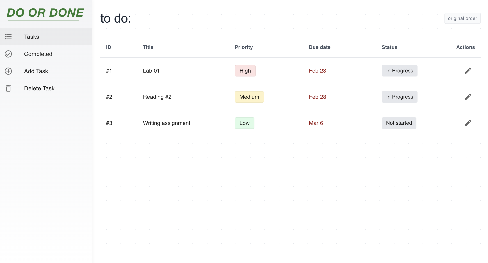
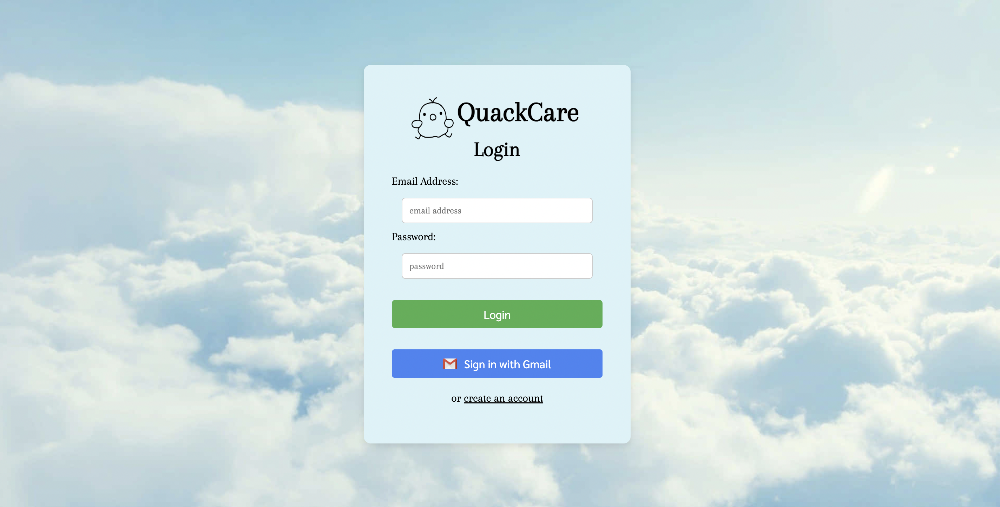
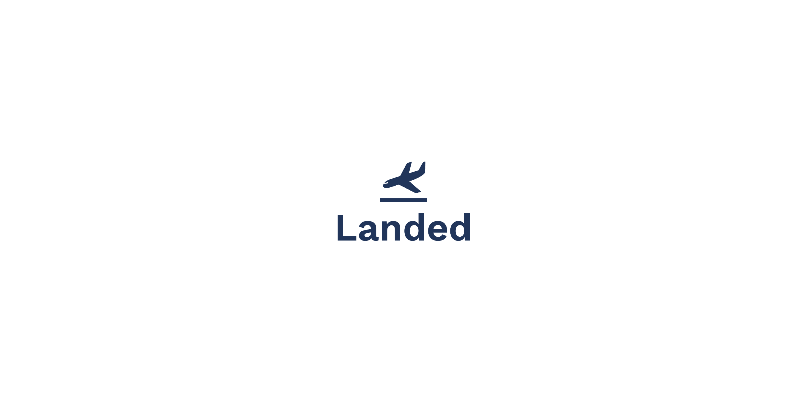

ProjectsA showcase of my work and contributions

Click to view gallery
Task Management System
• Flask(Python) • React.JS • SQLite • CSS
A modern, minimalist task management web application that helps users organize and track their tasks efficiently.

Click to view gallery
QuackCare - Mental Wellness App
• React • JavaScript • Firebase • AI APIs
An AI-powered chatbot focused on supporting mental wellness, equipped with practical tools and personalized resources to help users manage their emotional well-being.

Click to view gallery
Landed - Job Application Aid
• NodeJS • React • Postgres • Firebase
Landed is a web application designed to simplify as well as supercharge the job application process at the same time using the power of AI.